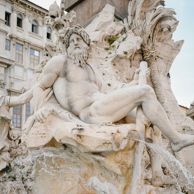

Mitologia
O que é Mitologia?
A mitologia é um sistema de crenças composta por uma série de narrativas chamadas de mito. Essas histórias buscam explicar tudo o que existe e é importante para uma sociedade.
Os mitos são histórias que explicam a existência de diversos elementos da natureza, assim como ensinam sobre o comportamento humano. Essas narrativas e lendas compõem o imaginário coletivo de um determinado povo.
Formam uma tradição oral, suas histórias são contadas de geração a geração. Esses relatos fabulosos se transformam na história das coisas e em uma crença comum compartilhada por um grupo de pessoas.
O que é mito?
A palavra mito possui sua origem no termo grego mythos que significa "narrativa". Assim, a mitologia pode ser compreendida como um conhecimento oral que visa explicar o mundo.
O mito é história contada oralmente composta de seres fantásticos: heróis, deuses e criaturas mitológicas. Essas são repletas de ensinamentos e formam um tipo de conhecimento.
Quantas mitologias existem?
Não é possível precisar a quantidade exata de mitos ou mitologias existentes. Diversos povos construíram diferentes e complexos sistemas mitológicos.
Entretanto, todas as mitologias possuem uma característica comum: servir de explicação para o surgimento do mundo, para os elementos da natureza e as relações entre os seres humanos.
Muitas sociedades que possuíam uma consciência mítica foram extintas, outras sofreram um processo de transformação em que os mitos foram sendo substituídos por outros conhecimentos: a filosofia e a religião.